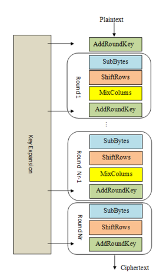
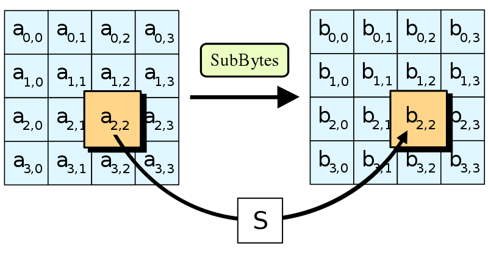
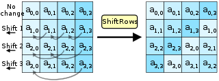

8 Basics about AES
8.1 Introduction
In some decades ago, the needs of encryption in both governmental, military and also basic data arose around the world. Therefore, many algorithms have been developed. Some among them survive until today and we have AES.
For a clear introduction about AES, I would refer you to read it in the Wikipedia page of AES.
8.2 Algorithms
The encryption of AES can be broken into two parts, the Key Schedule and the Encryption. Based on your mode (AES-256, for example), your key will be required to have this length. At right now, AES-256 is still super good for any of your normal encryption.
8.2.1 Key Schedule
The Key Schedule process is required to break the key into small sub-keys, which will be used in each round of AES. The Key Schedule’s implementation is worked by the operations under Galois Field \(GF(2^8)\). Explaining this process would take lots of time because of the Abstract Algebra it’s related, so I would give a link if you really want to learn about it:
8.3 Processes of an AES

As you see here, default AES will have 10 rounds, with these subprocess:
- AddRoundKey: The sub-key from Key Schedule will be XOR-ed with the 16-byte block of plaintext.

- SubBytes: Each position of the block will be substituted with another byte, via implementation of Sbox. The Sbox is just a sophiticated way to substitute, rather than poorer one like in classical cipher, like Caesar. Again, the implementation is required some advanced math so we can assume that, this Sbox will never leak any bytes.

- ShiftRows: This step is super simple, as except the first row, every other rows will be left-shifted 1, 2, and 3 positions.

- MixColumn: At this step, every column of the block will be fixed after a matrix multiplication under Galois Field.

One series that I really recommended is AES introduction from the website CryptoHack. You could also play others about AES here.